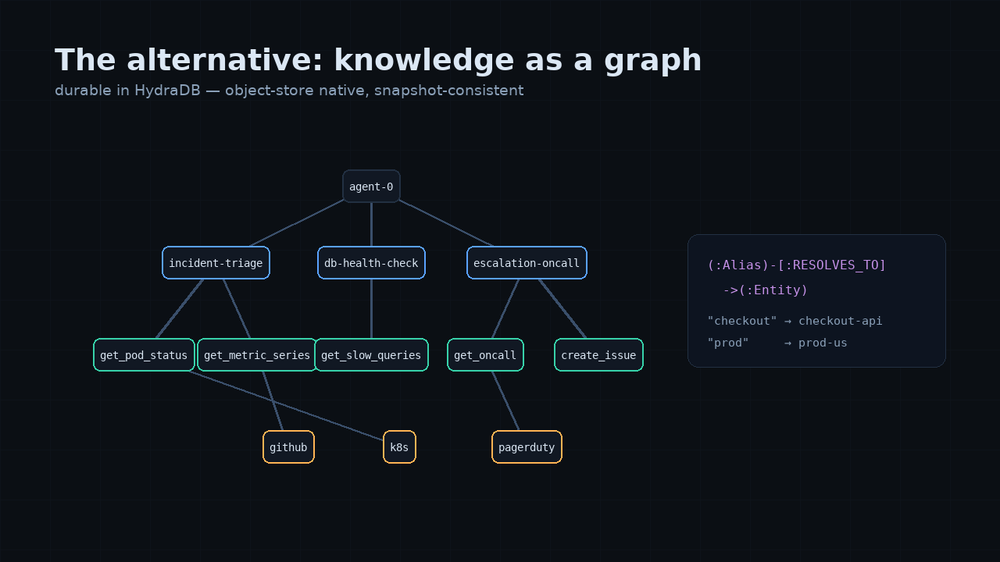

Tool tax
The model re-reads schemas it will not call. /v1/plan returns only the tools that match the task.
Self-hosted web API · built on HydraDB
ContextMesh is a web API that plans context from a graph. Send a task to /v1/plan and get back only the skills, tool schemas, MCP servers, and resolved entities that task needs.
Stuffing every schema into the prompt is slow, expensive, and brittle. ContextMesh gives your agent a small, exact context pack per task through a single API call.
The model re-reads schemas it will not call. /v1/plan returns only the tools that match the task.
Mentions like “checkout” or “prod” are resolved to canonical entities in the same plan response—no extra lookup calls.
Usage and learned aliases are written back via /v1/session to a graph that survives restarts.

Your agent posts a task, gets a context pack, binds only those tools, then reports what it used. The graph answers in two round-trips.
POST /v1/plan with a task{"task": "why is checkout failing in prod"}
incident-triage → 5 tools → github, k8s, grafana, pagerduty
checkout → checkout-api · prod → prod-us
POST /v1/session to write backusage counters and learned aliases improve the next plan
API reference · v0.2.0
Run the ContextMesh service next to your HydraDB node and call it from any agent framework or language. Reads (/v1/plan) are concurrent; writes (/v1/session) are serialized per process to match single-writer storage.
/v1/plan
Plan context for a task. Returns matched skills, tool schemas, MCP servers, resolved entities, and timing.
/v1/session
Record what was used. Updates usage counters and learns new aliases. Returns a session_id.
/v1/stats
Graph counts by label (skills, tools, servers, entities, aliases, sessions).
/health
Liveness plus graph reachability. /ready returns 503 when the graph is unreachable.
curl -s http://localhost:8000/v1/plan \
-H "Content-Type: application/json" \
-d '{
"task": "why is checkout failing in prod"
}'{
"skills": ["incident-triage"],
"tools": [
{ "tool": "get_pod_status", "server": "k8s",
"schema_json": "{...}" },
{ "tool": "get_events", "server": "k8s", ... },
{ "tool": "get_metric_series", "server": "grafana", ... }
],
"mcp_servers": [
{ "name": "k8s", "command": "..." },
{ "name": "grafana", ... }
],
"resolved_entities": {
"checkout": { "name": "checkout-api", "kind": "service" },
"prod": { "name": "prod-us", "kind": "environment" }
},
"graph_round_trips": 2,
"context_ms": 7.0
}const base = "http://localhost:8000";
// Replace base with your self-hosted service URL.
// If API auth is enabled, set this header from a secure runtime config:
const headers = { "Content-Type": "application/json" };
// headers["X-API-Key"] = apiKey;
const task = "why is checkout failing in prod";
async function post(path, body) {
const response = await fetch(`${base}${path}`, {
method: "POST",
headers,
body: JSON.stringify(body),
});
const data = await response.json();
if (!response.ok) {
throw new Error(data.error?.message || `HTTP ${response.status}`);
}
return data;
}
// 1. Plan: only the context this task needs.
const pack = await post("/v1/plan", { task });
// 2. Bind pack.tools, run your model, then record what was used.
await post("/v1/session", {
task,
used_tools: ["get_pod_status", "get_events"],
resolutions: Object.fromEntries(
Object.entries(pack.resolved_entities)
.map(([mention, ent]) => [mention, ent.name])
),
});import requests
base = "http://localhost:8000"
# Replace base with your self-hosted service URL.
# If API auth is enabled, set this from a secure runtime config:
headers = {} # leave empty when auth is disabled
# headers["X-API-Key"] = api_key # set from secure runtime config if enabled
task = "why is checkout failing in prod"
def post(path, body):
response = requests.post(
f"{base}{path}", json=body, headers=headers, timeout=10
)
data = response.json()
if not response.ok:
raise RuntimeError(data.get("error", {}).get("message", response.text))
return data
# 1. Plan: only the context this task needs.
pack = post("/v1/plan", {"task": task})
# 2. Bind pack["tools"], run your model, then record what was used.
post("/v1/session", {
"task": task,
"used_tools": ["get_pod_status", "get_events"],
"resolutions": {
mention: ent["name"]
for mention, ent in pack["resolved_entities"].items()
},
})scripts/run_node.sh # :7687 :8443 :9090
pip install -r requirements.txt
python -m hydracontext.seed
uvicorn hydracontext.service:app --port 8000
POST /v1/plan → bind tools → run → POST /v1/session
Auth: off by default. Set CONTEXTSMESH_API_KEY to require X-API-Key or Authorization: Bearer, or terminate auth at your gateway. Writes are serialized per process; reads are concurrent. A Python store (HydraContextStore) is also available for in-process use.
// 401 when an API key is enabled and missing
{ "error": { "code": "http_error",
"message": "Missing or invalid API key.",
"request_id": "9f2c1a7b4e01" } }
// 422 invalid request
{ "error": { "code": "invalid_request",
"message": "Request validation failed.",
"request_id": "9f2c1a7b4e01",
"details": [ ... ] } }
// 503 when HydraDB cannot serve a plan or write
{ "error": { "code": "graph_unavailable",
"message": "Graph backend unavailable.",
"request_id": "9f2c1a7b4e01" } }
// GET /ready when the graph is unreachable
{ "ok": false, "graph": "agent", "graph_reachable": false }Try the API
This calls POST /v1/plan on the live service and renders the JSON response below. Works with recorded packs if the API is offline.
Five ops tasks, one local 1.5B model: every tool in the prompt versus the context pack returned by the API.
46% fewer tokens with the same model and the same expected answers.
The planned pack binds the right tools and resolves the right services. The baseline does not.
Measured against a live HydraDB node. Reads scale concurrently; session writes are serialized per process (single-writer-per-cell). Graph storage survives restarts because object storage is the source of truth.
Proposed pilot pricing for the hosted or managed API. Self-host the open stack on your own infra anytime.
$0
For a first agent
$0.40 / 1k
Per 1,000 resolutions
Custom
Self-hosted, your cloud
POST /v1/plan returns a context pack: skills, tools (with schemas and server), mcp_servers, resolved_entities (mention → canonical name/kind), plus graph_round_trips and context_ms. Your agent binds only those tools.
Yes. It’s plain HTTP/JSON. Call /v1/plan before your model step and /v1/session after—LangGraph, custom loops, or any runtime in any language.
The primary interface is the web API. For Python you can also use HydraContextStore in-process (same plan/record logic) if you prefer embedding over HTTP.
POST /v1/session takes the task, used_tools, and resolutions. It increments usage counters and learns new aliases. A conflict guard keeps one canonical entity per mention.
In a HydraDB graph (object-storage-backed). Query nodes are disposable caches, so a restart does not lose the graph. Reads are concurrent; writes are serialized per process.
Two options. Set CONTEXTSMESH_API_KEY on the service to require X-API-Key or Authorization: Bearer on /v1/* (off by default). Or terminate auth at your API gateway or reverse proxy, where you can add TLS and network controls. The OpenAPI spec at /openapi.json and docs at /docs describe the surface to protect.
Yes. One Docker image for the HydraDB node and one Python service for the API. Both run on a laptop in this repo; for production, deploy it behind your gateway with auth and TLS.